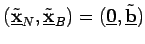

Inhalt Index DeskTop Bronstein

 Optimierung Lineare Optimierung Simplexverfahren Übergang zum neuen Simplextableau
Optimierung Lineare Optimierung Simplexverfahren Übergang zum neuen Simplextableau


Ist ein Tableau nicht entscheidbar (Fall c), dann wird ein neues Tableau bestimmt, indem eine Basisvariable xp ausgewählt und gegen eine Nichtbasisvariable xq ausgetauscht wird:
Dabei sind folgende Austauschregeln zu beachten:
Dann ist  eine neue Ecke mit nicht kleinerem Zielfunktionswert . Die angegebenen Bedingungen werden mit der folgenden Wahl des Pivotelementes erfüllt:
Sind die Ecken des zulässigen Bereiches nicht entartet, dann bricht das Simplexverfahren nach einer endlichen Anzahl von Simplexschritten mit einem entscheidbaren Tableau ab (Fall a) oder Fall b)).
| Beispiel |
|
Die zum Beispiel unter Ecke und Basis gefundene Normalform kann direkt in ein Simplextableau übertragen werden. Schema 4a, b
Das Tableau ist nicht optimal, da in der letzten Zeile noch positive Koeffizienten der Zielfunktion auftreten. Die dritte Spalte wird als Pivotspalte festgelegt (auch die zweite Spalte wäre denkbar). Mit allen positiven Koeffizienten der Pivotspalte bildet man die Quotienten
Da das neue Tableau nicht optimal ist, wird jetzt x6 gegen x3 getauscht (nächstes linkes Schema). Die Ecke des 3. Tableaus entspricht dem Punkt P6 in der Abbildung. Nach einem weiteren Tausch erhält man ein optimales Tableau (nächstes rechtes Schema) mit dem Maximalpunkt , der dem Punkt P5 mit dem maximalen Zielfunktionswert entspricht. Schema 4c, d
|